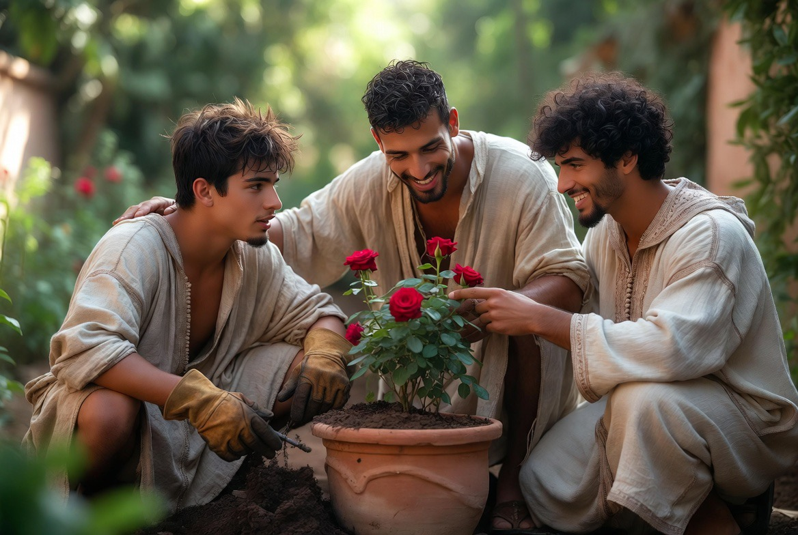
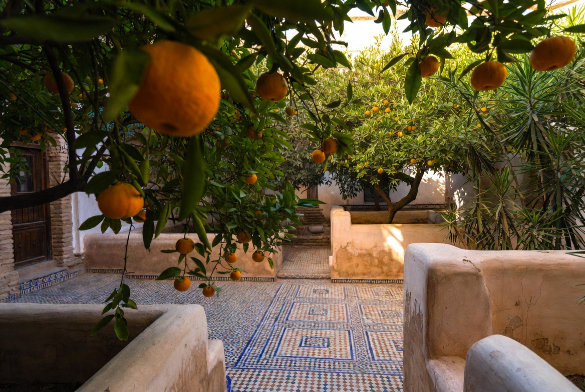
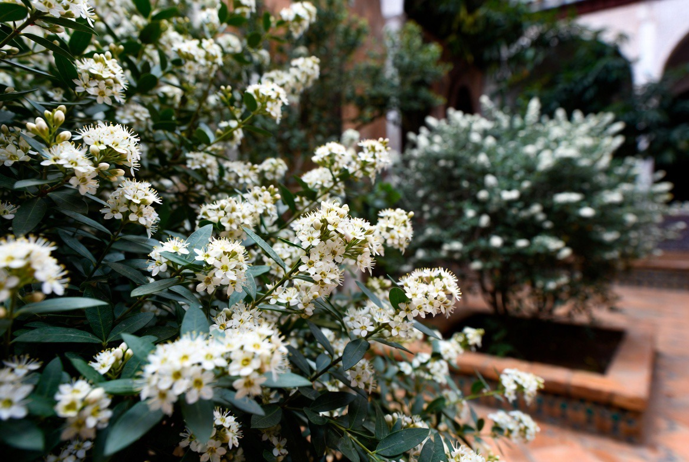
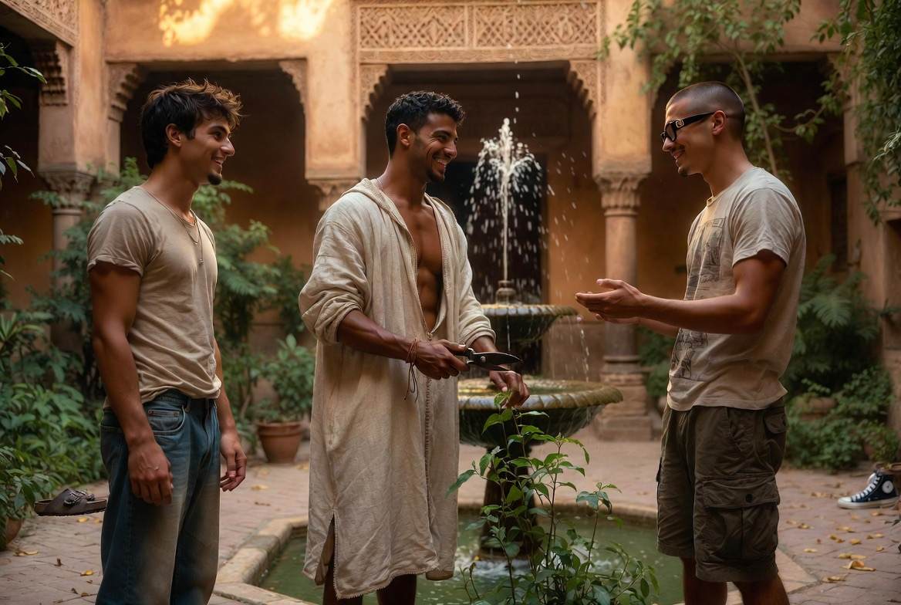
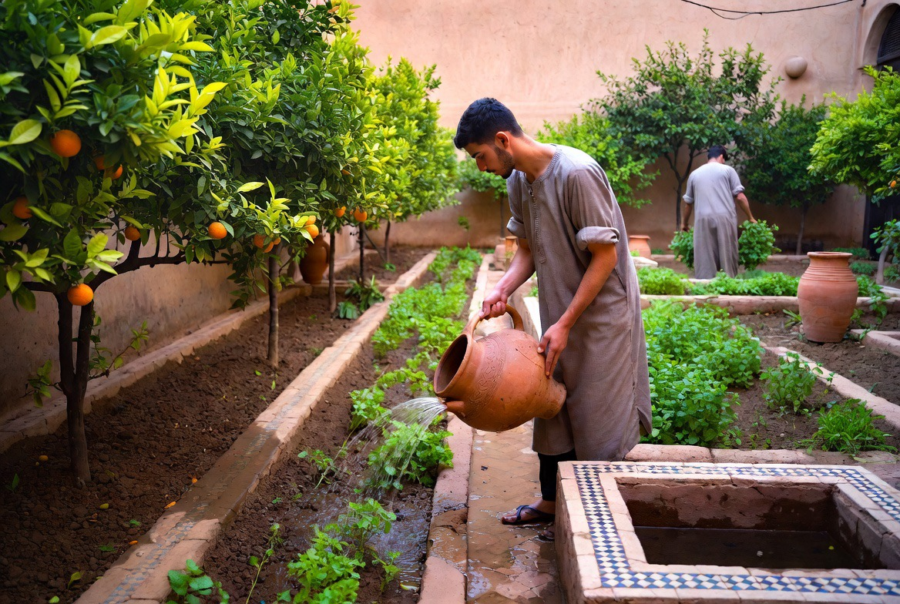
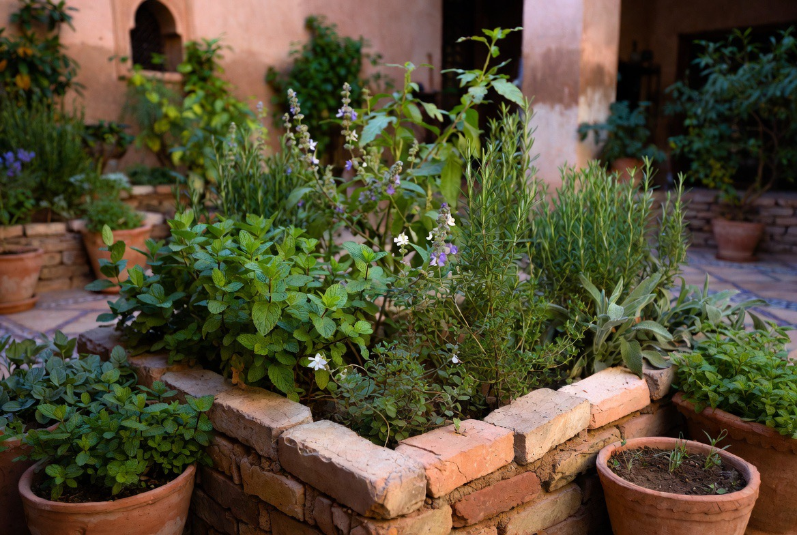

Jardin & Potager
Le jardin n’est pas un décor. C’est un espace vivant, ordonné et productif, fidèle à la tradition du riyad arabe.

Dans la culture arabe, le jardin est un modèle d’ordre : l’eau, l’ombre, le parfum et la nourriture y sont pensés ensemble.
Au Riad, trois espaces se distinguent sans se séparer : le jardin principal, le jardin secret (bustan) et le potager. Chacun a sa fonction, son rythme, son silence.
Ce n’est pas un parc d’agrément. C’est un système vivant qui forme le regard, nourrit la table et rappelle que la beauté naît de la mesure.
La structure du Riad
Axes, parterres, bassin, allées d’ombre. L’eau organise le parcours ; les arbres fixent le temps. On ne traverse pas le jardin : on y habite.
JARDIN PRINCIPAL
Cour et allées, agrumes, myrte, jasmin. Ombre et parfum pour le quotidien de la maison.
JARDIN SECRET
Bustan plus retiré : roses rares, lys, espèces choisies. Silence plus dense, accès mesuré.
POTAGER
Légumes, herbes, fruitiers. Le travail de la terre fait partie de la formation.

Le jardin principal
Espace partagé de la maison. Agrumes, arbustes et aromatiques y structurent l’ombre et le parfum. C’est le visage le plus visible du riyad.


Agrumes
Orangers amers, citronniers, parfois bergamote. Ombre, parfum des fleurs, fruit pour la table et l’eau de fleur d’oranger.
Myrte
Myrtus communis. Emblème des jardins andalous et maghrébins. Feuillage dense, fleur discrète, usage rituel et ornemental.
Jasmin
Jasmin blanc et jasmin de nuit. Le parfum du soir, lié à la tradition des cours intérieures.
Oliviers & cyprès
Arbres de la mémoire méditerranéenne. Fruit, ombre, présence symbolique dans la culture arabe. Les cyprès marquent les axes et protègent l’intimité des espaces.
Aromatiques
Menthe, basilic, romarin, verveine. Pont entre le jardin et la table, entre le geste et le goût.
Le jardin secret
Plus retiré que le jardin principal. Roses anciennes, lys, stephanotis, espèces rares du bustan. Parfum plus fort, ombre plus dense. Dans la tradition arabe, le jardin secret n’est pas un luxe gratuit : c’est un lieu de retenue, de maturité, où l’on apprend à ralentir.




Ceux qui y travaillent — taille des roses, soin des plantes délicates — y apprennent la patience autant que le geste.
Le potager
Légumes de saison, herbes, quelques fruitiers. Le potager nourrit la table de la maison et forme ceux qui y résident : ce qui pousse ici n’est pas un exercice esthétique. Il entre dans les repas partagés, dans la cuisine du soir, dans le rythme de la semaine.

Le soin du potager fait partie de la formation des jeunes du Dar al-Hiraf. La main qui taille le bois ou pose le zellige est la même qui retourne la terre.
الحديقةُ ظلٌّ وماءٌ ورائحةٌ
وموضعُ سكينةٍ لمن عرفَ أن يبطئَ
« Le jardin est ombre, eau et parfum — et lieu de quietude pour qui sait ralentir. »
Tradition du riyad — lecture contemporaine